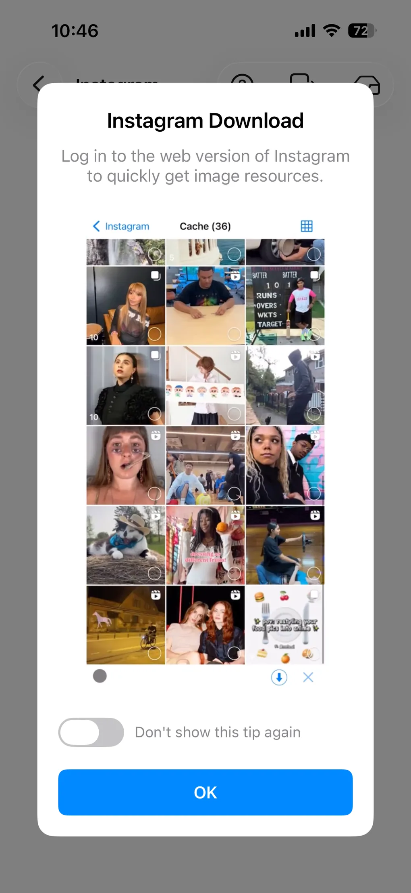

Instagram 사진, 릴스, 동영상을 저장하는 방법
Instagram 사진과 동영상을 사진 앨범에 저장하려면 예전에는 스크린샷을 찍어야 했습니다. 화질은 떨어지고, 화면 UI가 함께 찍히고, 모서리에 워터마크까지 남았죠. ImageGet은 다릅니다. Instagram 계정에 로그인해 평소처럼 둘러보기만 하면, ImageGet이 보고 지나친 사진과 릴스, 동영상을 자동으로 모아 둡니다. 그중에서 저장할 것만 고르면 됩니다. Instagram 사진, 릴스, 동영상을 저장하는 방법을 단계별로 알아보세요.
ImageGet을 무료로 다운로드하세요 — Instagram 사진, 릴스, 동영상을 한 번의 탭으로 저장합니다.
ImageGet 다운로드1단계: Instagram 계정에 로그인하기
ImageGet을 열고 Instagram 탭을 탭합니다. Instagram 계정으로 로그인하면 앱이 피드, 프로필, 탐색 페이지에 안전하게 연결해 줍니다. 모두 ImageGet 안에서 이루어집니다. 로그인한 뒤에는 공식 앱과 같은 방식으로 게시물과 프로필, 탐색 페이지를 둘러볼 수 있습니다. Instagram 콘텐츠는 링크를 복사해 붙여넣을 필요가 없습니다. 팔로우하는 것도, 검색한 것도 바로 그 자리에 저장할 준비가 되어 있습니다.

2단계: 둘러보기 — 사진, 릴스, 동영상이 자동으로 모입니다
로그인한 뒤에는 평소처럼 Instagram을 둘러보기만 하세요. 피드와 프로필, 탐색 페이지를 넘기면서 ImageGet이 지나치는 사진, 릴스, 동영상을 하나하나 조용히 모아 둡니다. 탭할 것도, 복사할 링크도 없습니다. 보는 것은 그대로 모입니다.

3단계: 골라서 저장하기
둘러보기가 끝나면 모아 둔 목록을 열어 ImageGet이 수집한 것을 확인합니다. 남기고 싶은 사진, 릴스, 동영상을 고르고 한 번의 탭으로 사진 앨범에 저장하세요. 사진은 원본 해상도로, 릴스는 소리와 함께 동영상으로 저장됩니다. 압축도, 워터마크도 없습니다. Smart Filtering을 켜면 저화질 썸네일을 건너뛰고 고해상도 이미지만 남길 수 있습니다.

Instagram에서 저장할 때 알아 둘 점
- 프로필 통째로 일괄 저장 — 계정의 모든 사진과 동영상을 한 번에 받을 수 있습니다. 사진가나 작가의 피드 전체를 남기고 싶을 때 딱 맞습니다.
- Smart Filtering 활용 — 저해상도 썸네일, 프로필 사진, 아이콘은 건너뛰고 실제로 원하는 고화질 이미지만 남깁니다.
- 저작권 존중 — 저장할 권리가 있는 사진과 동영상만 받고, 다시 올리거나 공유할 때는 원작자를 꼭 표시하세요.
FAQ
Instagram 릴스와 동영상도 다운로드할 수 있나요?
네 — 릴스와 동영상은 화면 녹화 없이 소리와 함께 사진 앨범에 저장됩니다.
Instagram 사진 저장은 무료인가요?
네 — 무료 요금제에 Instagram 이미지와 동영상 저장 3회가 포함됩니다. Premium으로 업그레이드하면 횟수 제한 없이 저장하고 광고 없이 사용할 수 있습니다.
스크린샷을 찍거나 화면을 녹화해야 하나요?
아니요. ImageGet은 Instagram 사진과 릴스를 원본 화질로 바로 저장합니다. 스크린샷도 화면 녹화도 필요 없습니다.
원본 화질로 저장되나요?
네 — ImageGet은 Instagram 사진과 릴스를 압축이나 워터마크 없이 원본 해상도로 저장합니다.